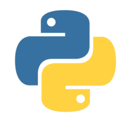
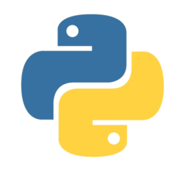
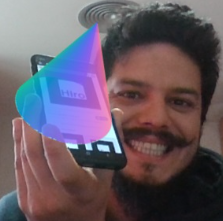

Tecnologia em Sistemas para Internet

Curso superior focado em desenvolvimento web, sistemas modernos, UX, dados e inovação. Formação prática para o mercado de tecnologia.
Quero entrar no TSISobre o curso
Objetivo
Formar profissionais capazes de projetar, desenvolver e manter sistemas e aplicações para a web, com foco em qualidade, segurança e usabilidade.
Metodologia
Aulas práticas, projetos integradores, desafios reais e incentivo à construção de portfólio desde o primeiro período.
Linguagens utilizadas


 



Grade • 1º Período
- Lógica de Programação
- Construção de Páginas para Internet I
- Web Design
- Redes de Computadores e Internet
- Arquitetura de Computadores
- Projeto Integrador I
Corpo docente
Gustavo Dornelas
Sistemas de Informação, Engenharia de Software, Análise de Dados.
Tiago Segato
Desenvolvimento Web/Mobile, UX, Sistemas Multiagentes.

Lázaro Vinicius
RA, RV, IoT, Gamificação e Educação Digital.
Projetos & Experiências
Projeto Integrador
Desenvolvimento de soluções reais por semestre, com apresentação e documentação.
Comunidade
Eventos, hackathons, grupos de estudo e networking com o ecossistema tech.
Como ingressar
- Acompanhe os editais do IFB
- Participe do processo seletivo
- Realize sua matrícula